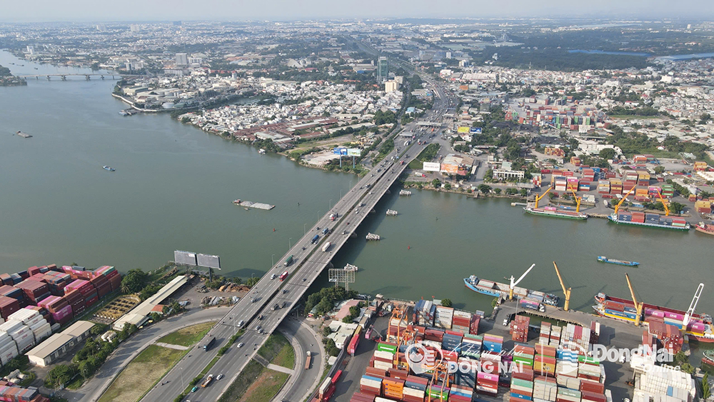

Cửa ngõ giao thông chiến lược khu vực Đông Nam Bộ
Cầu Đồng Nai là công trình giao thông quan trọng trên Quốc lộ 1A, bắc qua sông Đồng Nai, nối TP. Thủ Đức (TP.HCM) với TP. Biên Hòa (tỉnh Đồng Nai). Đây là tuyến huyết mạch kết nối TP.HCM với các tỉnh miền Đông Nam Bộ, miền Trung và Tây Nguyên.
| Tên chính thức | Cầu Đồng Nai |
|---|---|
| Tên nhân gian | Cầu Đồng Nai mới (phân biệt với cầu Đồng Nai cũ) |
| Vị trí | thành phố Biên Hòa (tỉnh Đồng Nai) với thành phố Dĩ An (tỉnh Bình Dương) |
| Bắc qua | Sông Đồng Nai |
| Năm khởi công | 2008 |
| Năm hoàn thành | 2009 |
| Chiều dài | Khoảng 461 m (cầu mới) |
| Chiều rộng | 20 m |
| Tải trọng thiết kế | HL-93 |
| Loại kiến trúc | Cầu dầm bê tông cốt thép dự ứng lực |
| Đơn vị thiết kế | Tư vấn thiết kế giao thông thuộc Bộ GTVT |
| Đơn vị thi công | Tổng công ty Xây dựng Công trình Giao thông 1 (CIENCO 1) |
| Tổng mức đầu tư | Khoảng 1.500 tỷ đồng (bao gồm nâng cấp Quốc lộ 1A) |
Cầu Đồng Nai giữ vai trò đặc biệt quan trọng trong hệ thống giao thông quốc gia, giúp giảm tình trạng ùn tắc tại cửa ngõ phía Đông TP.HCM. Công trình tạo điều kiện thuận lợi cho vận chuyển hàng hóa, đặc biệt là khu công nghiệp Đồng Nai, cảng biển và các tỉnh miền Đông Nam Bộ. Đây là tuyến giao thông chiến lược thúc đẩy phát triển kinh tế vùng.
Cầu Đồng Nai mới được khánh thành và đưa vào sử dụng năm 2009, thay thế cầu cũ thường xuyên quá tải. Việc hoàn thành cầu đã cải thiện đáng kể tình trạng kẹt xe kéo dài nhiều năm tại khu vực này.

Cầu Đồng Nai nhìn từ trên cao qua sông Đồng Nai
| Tên cầu | Chiều dài | Năm hoàn thành | Loại cầu |
|---|---|---|---|
| Cầu Đồng Nai | 461 m | 2009 | Bê tông cốt thép |
| Cầu Sài Gòn | 1.010 m | 1961 | Bê tông cốt thép |
| Cầu Thủ Thiêm | 1.250 m | 2008 | Bê tông cốt thép |
| Cầu Phú Mỹ | 2.100 m | 2009 | Cầu dây văng |